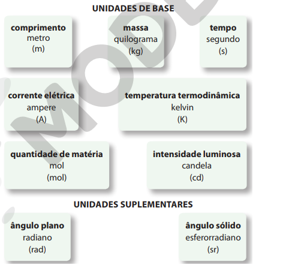

Física e Unidades de Medida
A Física (do grego physis, natureza) pode ser considerada fundamental para as outras ciências e também para muitas tecnologias, uma vez que se dedica a estudar os componentes básicos dos diferentesfenômenos e leis que governam interações físicas entre eles.
O campo de estudo da Física Clássica é geralmente dividido em cinco grandes áreas: Mecânica, Termofísica (calor e termodinâmica), Óptica (luz e visão), Ondas (que inclui o estudo do som e da audição) e Eletromagnetismo (eletricidade e magnetismo). A Física Moderna, que teve início com as teorias elaboradas a partir do início do século XX, abrange a Relatividade e a Cosmologia, a Astrofísica, a Física Quântica, a Física Nuclear e a Física da Matéria Condensada
Unidades de Medida
As unidades de medida são modelos estabelecidos para medir diferentes grandezas, tais como comprimento, capacidade, massa, tempo e volume.A medição de uma quantidade é sempre feita em comparação com uma medida-padrão, que chamamos de unidade de medida.
Sistema Internacional de Unidades
Uma primeira tentativa de padronização de medidas ocorreu na França em 1790, época da Revolução Francesa. O sistema então criado pela Academia de Ciências de Paris, denominado Sistema Métrico Decimal e que gradativamente passou a ser aceito em quase todo o mundo, adotava como unidades de medida o metro (m), o quilograma (kg) e o segundo (s).
O Sistema Internacional de Unidades,abreviado por SI, é o conjunto de medidas para grandezas físicas que existe com o intuito de padronizar, adequar e unificar tais medidas em todo o mundo.
O SI é composto de sete unidades de base, ou fundamentais, e de duas unidades suplementares,de unidades derivadas e de múltiplos e submúltiplos de todas elas. Qualquer grandeza física pode ser definida como uma relação entre as sete unidades fundamentais. Essas grandezas são chamadas de grandezas derivadas.
O diagrama a seguir mostra as unidades de base e as suplementares, com suas respectivas grandezas associadas (em destaque), unidades de medida e os símbolos correspondentes:

Prefixo do SI e Notação Científica
A linguagem utilizada pela Física e por outras ciências exatas é a linguagem dos números. A diversidade dos números que aparecem no mundo físico é enorme. Para se ter uma ideia, a massa da Terra, por exemplo, é de cerca de 5.980.000.000.000.000.000.000.000 quilogramas (kg), enquanto o diâmetro de um próton é de cerca de 0,000 000 000 000 001 metro (m).
A grande quantidade de zeros torna a representação desses números bastante inconveniente, e, por esse motivo, usamos uma maneira mais prática para escrever valores muito grandes ou muito pequenos. Usando potência de dez, podemos escrever a massa da Terra como 5,98.1024 kg e o diâmetro do próton como 10-15 m.
A notação científica é uma forma de escrever números usando potência de 10. É utilizada para reduzir a escrita de números que apresentam muitos algarismos.
Ao usar a notação científica para representar um número N qualquer, devemos escrevê-lo na forma N = m.10n, em que m é a mantissa, e o número deve ser maior ou igual a 1 e menor do que 10, e o expoente n, um número inteiro. Assim, o número 253, por exemplo, deve ser escrito como 2,53.102.
A grande vantagem do uso da notação científica é que as operações de multiplicação e de divisão podem ser feitas respectivamente por adição ou por subtração dos expoentes das potências de dez, conforme os exemplos a seguir:
Para facilitar ainda mais a notação das grandezas, é bastante comum utilizar prefixos representando as potências de dez.